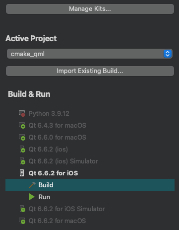
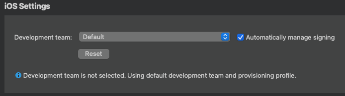
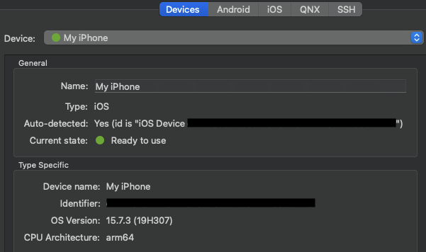

Connect iOS devices
The connections between Qt Creator and an iOS device are protected by using a certificate that you receive from Apple when you enroll in the Apple Developer Program. The certificate is copied to the device when you configure the device.
The first time you connect the device to your local machine, you are asked to enable developer mode on the device. The next time you connect the device, Qt Creator detects it automatically. To disable automatic connections to a device that you do not use for development, go to Preferences > iOS and clear Ask about devices not in developer mode.
Note: The process of configuring devices and the UI varies slightly depending on the Xcode version that you use. We recommend that you use the latest available Xcode version.
Create a connection to an iOS device
To configure connections between Qt Creator and an iOS device:
- Check that you installed Xcode and Qt for iOS.
- Connect the device to your local machine with a USB cable.
- Start Xcode to configure the device.
For example, in Xcode version 15, go to Window > Devices and Simulators > Devices, and select + to add the connected device.
- To specify build settings:
- Open a project for an application you want to develop for the device.
- Go to Projects > Build & Run to select the kit for building applications for and running them on iOS.

- Go to Build Settings.
- In iOS Settings, select the development team to use for signing and provisioning applications. You must configure development teams and provisioning profiles in Xcode using an Apple developer account.

- Select Automatically manage signing to automatically select the provisioning profile and signing certificate on your local machine that matches the entitlements and the bundle identifier of the iOS device.
- Go to Run Settings to specify run settings.
Usually, you can use the default settings.
When you run the project, Qt Creator uses Xcode to deploy the application to the device.
Your signing certificate is used to sign application packages for deployment to the device.
Note: If you cannot deploy applications because a provisioning profile is missing, check that provisioning profiles are listed in Xcode by going to Xcode > Preferences > Accounts. For more information about how to acquire and install a provisioning profile, see Apple documentation: Create a development provisioning profile.
View device connection status
When you connect an iOS device to your local machine with USB, Qt Creator automatically detects the device if you have configured it by using Xcode. To view information about the connected device, go to Preferences > Devices.

If the current device state is Connected, (the traffic light icon is orange), you need to configure the device using Xcode.
See also Activate kits for a project, How To: Develop for iOS, and Developing for iOS.